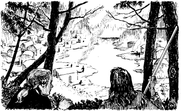
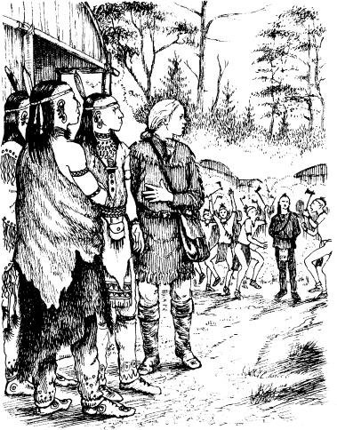

8
醫生巫師
下半天，五個人行到霍列根湖北邊。他們從独木舟會跳落來，安卡斯同欽加古克兩人將独木舟扛起。彼將独木舟安放幾棵樹之下。
「咱們迷路矣。」鄧肯言道，「咱們接下來欲去何方？」
「吾之印地安朋友悉知往休倫人之村莊之路。」鷹眼言道，「即在此地北面。為麥瓜之目的地。咱們亦往北行。」

彼等行了兩日。路遙。翌日下半天，彼等到達休倫人之村莊。村為一小湖旁，家屋約百戶。

「芒羅將軍，渠等同欽加古克守林。」鷹眼言道，「鄧肯同吾等入村。安卡斯往西面山坡行，偵察村莊，速返，告我等守衛之情形。」
時光已過一小時矣。四人皆待，安卡斯尚未返。
鄧肯忽言道：「吾計生矣。」渠言道，「鷹眼，借渠之外衣。吾不能著吾紅之軍服入村。吾將偽裝為醫生巫師──一名法蘭西之醫生，吾通法語，吾將出入村莊，休倫人不傷醫生巫師者，吾當尋著愛麗絲同蔻拉。」
此一計畫實屬兇險。
鄧肯著鷹之外衣，進休倫人之村莊。渠前面有棟大木屋，乃休倫酋長會堂。鄧肯步入。
數名休倫酋長同坐，彼等見鄧肯入內。一名酋長起身，渠之髮灰白，身軀魁武。渠以休倫語同鄧肯交談，鄧肯不解其言。
「渠能言法語否？」鄧肯問。
該休倫酋長用法語答道：「渠等何事而來？」
「吾為一醫生巫師。」鄧肯言道，「法蘭西國王派吾而來，請問此處可有休倫人生病乎？」
忽，自樹林傳來一陣呼號之聲。數名酋長走出會堂，鄧肯亦隨之出。更多之休倫人湧入村莊，彼等押著一人，乃安卡斯也！
